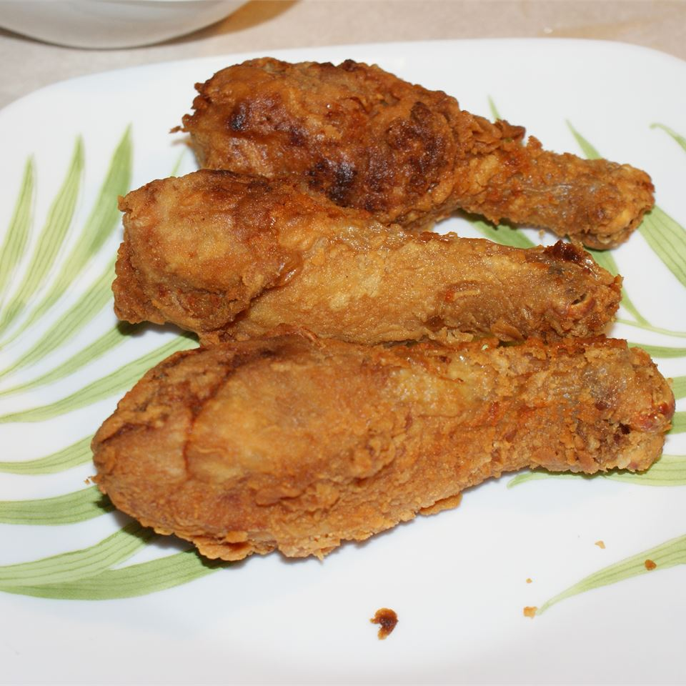

Fried Chicken

Description
As simple, as easy, as tasty as it gets! With this classic fried chicken recipe, you can't go wrong - so go right and fry up some chicken tonight!
Ingredients
- 1 (4 pound) chicken, cut into pieces
- salt and pepper to taste
- 1 1/2 cups all-purpose flour for coating
- 2 quarts vegetable oil for frying
Steps
- In a large skillet, heat oil over medium heat. Salt and pepper chicken pieces to taste, then roll in flour to coat. Place chicken pieces in skillet and fry on medium heat until one side is golden brown, then turn and brown other side until chicken is no longer pink inside and its juices run clear. Drain on paper towel and serve!